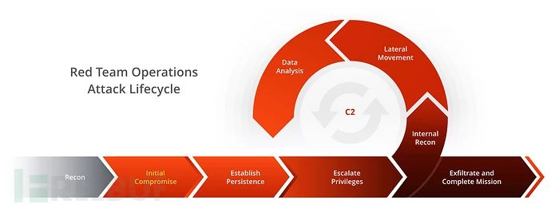

适用于渗透测试不同阶段的工具收集整理

该资源清单列表涵盖了一系列，适用于渗透测试不同阶段的开源/商业工具。如果你想为此列表添加贡献，欢迎你向我发送pull request。

侦察
主动情报收集
EyeWitness：可用于网站截图，以及提供一些服务器头信息，并在可能的情况下识别默认凭据。https://github.com/ChrisTruncer/EyeWitness
AWSBucketDump：AWS S3安全扫描工具，允许你快速枚举AWS S3 buckets以查找有趣或机密的文件。https://github.com/jordanpotti/AWSBucketDump
AQUATONE：子域名枚举探测工具。https://github.com/michenriksen/aquatone
spoofcheck：检查域是否可以被欺骗。它会检查SPF和DMARC记录是否存在允许欺骗的弱配置。https://github.com/BishopFox/spoofcheck
Nmap：用于发现计算机网络上的主机和服务。https://github.com/nmap/nmap
dnsrecon：DNS枚举脚本。https://github.com/darkoperator/dnsrecon被动情报收集
skiptracer：OSINT爬虫框架，利用PII paywall网站的一些基本python webscraping (BeautifulSoup) 来被动信息收集。https://github.com/xillwillx/skiptracer
ScrapedIn：用于爬取LinkedIn的工具，不受API数据侦察的限制。https://github.com/dchrastil/ScrapedIn
FOCA：主要用于在其扫描的文档中查找元数据和隐藏信息的工具。https://github.com/ElevenPaths/FOCA
The Harvester：是一个社会工程学工具，它通过搜索引擎、PGP服务器以及SHODAN数据库收集用户的email，子域名，主机，雇员名，开放端口和banner信息。https://github.com/laramies/theHarvester
Metagoofil：提取目标网站可用公共文档（如pdf，doc，xls，ppt等）元数据的工具。https://github.com/laramies/metagoofil
SimplyEmail：快速而简单的电子邮件侦察工具。https://github.com/killswitch-GUI/SimplyEmail
truffleHog：帮助开发人员检测他们在GitHub上发布的项目是否已经不小心泄漏了任何秘密密钥。https://github.com/dxa4481/truffleHog
Just-Metadata：一个收集和分析有关IP地址元数据的工具，并试图找到大型数据集内系统之间的关系。https://github.com/ChrisTruncer/Just-Metadata
typofinder：域名拼写错误检索工具。https://github.com/nccgroup/typofinder框架
Maltego：一款十分适合渗透测试人员和取证分析人员的优秀工具,其主要功能是开源情报收集和取证。https://www.paterva.com/web7/downloads.php
SpiderFoot：免费开源的网站信息收集类工具。https://github.com/smicallef/spiderfoot
datasploit：OSINT框架，用于对公司，人员，电话号码，比特币地址等执行各种侦察技术，汇总所有原始数据，并以多种格式提供数据。https://github.com/DataSploit/datasploit
Recon-ng：Python编写的全功能Web侦察框架。https://bitbucket.org/LaNMaSteR53/recon-ng武器化
Composite Moniker：CVE-2017-8570 PoC。https://github.com/rxwx/CVE-2017-8570
Exploit toolkit CVE-2017-8759：一个方便的python脚本，它为测试者和安全研究人员提供了一种快速有效的方式来测试Microsoft .NET Framework RCE。https://github.com/bhdresh/CVE-2017-8759
CVE-2017-11882 Exploit：最多接受超过17k字节长度的命令/代码。https://github.com/unamer/CVE-2017-11882
Adobe Flash Exploit：CVE-2018-4878。https://github.com/anbai-inc/CVE-2018-4878
Exploit toolkit CVE-2017-0199：一个方便的python脚本，它为测试人员和安全研究人员提供了一种快速有效的方式来测试Microsoft Office RCE。https://github.com/bhdresh/CVE-2017-0199
demiguise：HTA加密工具。https://github.com/nccgroup/demiguise
Office-DDE-Payloads：收集脚本和模板以生成嵌入DDE的Office文档，无宏命令执行技术。https://github.com/0xdeadbeefJERKY/Office-DDE-Payloads
CACTUSTORCH：是一个生成payload的框架,可用于基于James Forshaw的DotNetToJScript工具的攻防对抗。https://github.com/mdsecactivebreach/CACTUSTORCH
SharpShooter：用于检索和执行任意CSharp源码的payload创建框架。https://github.com/mdsecactivebreach/SharpShooter
Don’t kill my cat：用于生成被存储在polyglot图像中的混淆shellcode。https://github.com/Mr-Un1k0d3r/DKMC
Malicious Macro Generator Utility：生成混淆宏，其中还包括AV/Sandboxes逃避机制。https://github.com/Mr-Un1k0d3r/MaliciousMacroGenerator
SCT Obfuscator：Cobalt Strike SCT有效载荷混淆器。https://github.com/Mr-Un1k0d3r/SCT-obfuscator
Invoke-Obfuscation：PowerShell混淆器。https://github.com/danielbohannon/Invoke-Obfuscation
Invoke-DOSfuscation：powershell混淆编码框架。https://github.com/danielbohannon/Invoke-DOSfuscation
Unicorn：使用PowerShell降级攻击并将shellcode直接注入内存的工具。https://github.com/trustedsec/unicorn
Shellter：一个动态的shellcode注入工具，也是有史以来第一个真正动态的PE注入工具。https://www.shellterproject.com/
SigThief：是一个由python编写的,可以用于劫持合法的数字签名并绕过Windows的哈希验证机制的脚本工具。https://github.com/secretsquirrel/SigThief
Veil：用于生成绕过常用AV的metasploit有效载荷的工具。https://github.com/Veil-Framework/Veil
CheckPlease：用PowerShell，Python，Go，Ruby，C，C＃，Perl和Rust编写的CheckPlease Sandbox evasion模块。https://github.com/Arvanaghi/CheckPlease
Invoke-PSImage：将目标PS脚本嵌入到一个PNG图片文件的像素点中，并允许我们使用一行指令来执行该脚本。https://github.com/peewpw/Invoke-PSImage
LuckyStrike：基于PowerShell的实用程序，用于创建恶意的Office宏文档。仅用于渗透测试或教育目的。https://github.com/curi0usJack/luckystrike
ClickOnceGenerator：适用于红队的快速恶意ClickOnce生成器。https://github.com/Mr-Un1k0d3r/ClickOnceGenerator
macro_pack：一个用于自动生成混淆过的MS Office文档、VB脚本等其他格式的工具,其主要目的是用于渗透测试、demo以及社会工程学的评估。https://github.com/sevagas/macro_pack
StarFighters：基于JavaScript和VBScript的Empire启动器。https://github.com/Cn33liz/StarFighters
nps_payload：专为逃避入侵检测而生成Payload的工具。https://github.com/trustedsec/nps_payload
SocialEngineering：负责收集用于证书盗窃和鱼叉式网络钓鱼攻击的社交工程技巧和payloads。https://github.com/bhdresh/SocialEngineeringPayloads
Social-Engineer Toolkit：一款专为社交工程设计的开源渗透测试框架。https://github.com/trustedsec/social-engineer-toolkit
Phishery：一个支持SSL简单的HTTP服务器。https://github.com/ryhanson/phishery
PowerShdll：使用rundll32运行PowerShell。绕过软件限制。https://github.com/p3nt4/PowerShdll
Ultimate AppLocker ByPass List：常用AppLocker绕过技术存储库。https://github.com/api0cradle/UltimateAppLockerByPassList
Ruler：是一款能够通过MAPI/HTTP协议与Exchange服务器交互的工具。https://github.com/sensepost/ruler
Generate-Macro：一个独立的PowerShell脚本，它将生成具有指定有效负载和持久性方法的恶意Microsoft Office文档。https://github.com/enigma0x3/Generate-Macro
Malicious Macro MSBuild Generator ：生成恶意宏并通过MSBuild应用程序白名单绕过执行Powershell或Shellcode。https://github.com/infosecn1nja/MaliciousMacroMSBuild
Meta Twin：一个文件资源克隆器。从一个文件中提取元数据，包括数字签名，并注入到另一个文件中。https://github.com/threatexpress/metatwin
WePWNise：生成独立于体系结构的VBA代码，用于Office文档或模板，并自动绕过应用程序控制。https://github.com/mwrlabs/wePWNise
DotNetToJScript：能够利用JS/Vbs脚本加载.Net程序的工具。https://github.com/tyranid/DotNetToJScript
PSAmsi：一个审计和攻击 AMSI 签名的工具。https://github.com/cobbr/PSAmsi
Reflective DLL injection：是一种库注入技术，让DLL自身不使用LoadLibraryA函数,将自身映射到目标进程内存中。https://github.com/stephenfewer/ReflectiveDLLInjection
ps1encode：用于生成和编码基于powershell的metasploit有效载荷。https://github.com/CroweCybersecurity/ps1encode
Worse PDF：将一个普通的PDF文件变成恶意文件。用于从Windows机器上窃取Net-NTLM哈希。https://github.com/3gstudent/Worse-PDF
SpookFlare：一款可帮助你有机会绕过各种安全措施的工具，例如客户端检测和网络端检测的端点策略。SpookFlare还是Meterpreter，Empire，Koadic等的loader/dropper生成器。https://github.com/hlldz/SpookFlare
GreatEST：是一个生成应用程序白名单绕过的开源项目。此工具适用于红蓝对抗。https://github.com/GreatSCT/GreatSCT
nps：运行没有PowerShell的PowerShell。https://github.com/Ben0xA/nps
Meterpreter_Paranoid_Mode.sh：一个可以创建SSL/TLS shell连接的脚本。https://github.com/r00t-3xp10it/Meterpreter_Paranoid_Mode-SSL
The Backdoor Factory：一款安全测试工具,可以轻松的生成win32PE后门测试程序,ELF文件后门程序等。https://github.com/secretsquirrel/the-backdoor-factory
MacroShop：一组脚本，通过Office宏传递有效载荷。https://github.com/khr0x40sh/MacroShop
UnmanagedPowerShell：可以从一个非托管程序来执行PowerShell , 经过一些修改后也可以被用来注入到其他进程。https://github.com/leechristensen/UnmanagedPowerShellDelivery
钓鱼
King Phisher：一款专业的钓鱼活动工具包。https://github.com/securestate/king-phisher
FiercePhish：是一个管理所有钓鱼攻击的完整钓鱼框架 ，允许你跟踪单独的网络钓鱼活动，定时发送电子邮件等。https://github.com/Raikia/FiercePhish
ReelPhish：是一个实时双因素网络钓鱼工具。https://github.com/fireeye/ReelPhish/
Gophish：是一款专为企业和渗透测试人员设计的开源钓鱼攻击工具包。https://github.com/gophish/gophish
CredSniper：是一个使用Python微型框架Flask和Jinja2模板编写的网络钓鱼框架，支持捕获2FA令牌。https://github.com/ustayready/CredSniper
PwnAuth：一个让组织和渗透测试人员能够拥有测试其检测和响应OAuth滥用社会工程活动能力的平台。https://github.com/fireeye/PwnAuth
Phishing Frenzy：一个开源的钓鱼测试工具。https://github.com/pentestgeek/phishing-frenzy水坑攻击
BeEF：一款针对浏览器的渗透测试工具。https://github.com/beefproject/beef命令与控制
远程访问工具
Cobalt Strike：一款非常优秀的后渗透平台。https://cobaltstrike.com/
Empire：一个纯碎的PowerShell后期漏洞利用代理工具。https://github.com/EmpireProject/Empire
Metasploit Framework：一个软件漏洞利用框架。https://github.com/rapid7/metasploit-framework
Pupy：是一个基于python的开源跨平台（Windows，Linux，OSX，Android）远程管理和后期利用工具。https://github.com/n1nj4sec/pupy
Koadic：DEFCON上的一个后渗透工具，一款js/vbs远控，模块也蛮多的，涉及的功能也很全面。https://github.com/zerosum0x0/koadic
PoshC2：一款基于PowerShell和C#的命令控制工具。https://github.com/nettitude/PoshC2
Gcat：是一款使用Gmail控制管理的Python隐形后门。https://github.com/byt3bl33d3r/gcat
TrevorC2：是一个合法的网站（可浏览），用于隐藏命令执行的客户端/服务器通信。https://github.com/trustedsec/trevorc2
Merlin：是一个用Go语言编写的跨平台后期利用HTTP/2命令与控制服务器和代理（ agent ）。https://github.com/Ne0nd0g/merlin
Quasar：一个用C#编码的快速轻量级远程管理工具。https://github.com/quasar/QuasarRATStaging
Red Baron：是Terraform的一组模块和定制/第三方提供商，它试图为红队自动创建弹性，一次性，安全和灵活的基础架构。https://github.com/Coalfire-Research/Red-Baron
EvilURL：为IDN同形异义字攻击生成unicode域名并检测它们。https://github.com/UndeadSec/EvilURL
Domain Hunter：检查过期域名，bluecoat分类和Archive.org历史记录，以确定最为适合于钓鱼和C2的域名。https://github.com/threatexpress/domainhunter
PowerDNS：一个简单的PoC，用于演示如何使用DNS执行PowerShell脚本。https://github.com/mdsecactivebreach/PowerDNS
Chameleon：帮助红队将其基础架构分类为任意类别的工具。https://github.com/mdsecactivebreach/Chameleon
CatMyFish：搜索分类域。 为你的Cobalt Strike beacon C&C设置白名单域。https://github.com/Mr-Un1k0d3r/CatMyFish
Malleable C2：用于重新定义Beacon通信中的指标。https://github.com/rsmudge/Malleable-C2-Profiles
Malleable-C2-Randomizer：该脚本通过使用元语言随机化Cobalt Strike Malleable C2配置文件，从而最大程度上的减少基于签名的检测控制机会。https://github.com/bluscreenofjeff/Malleable-C2-Randomizer
FindFrontableDomains：搜索潜在的frontable域。https://github.com/rvrsh3ll/FindFrontableDomains
Postfix-Server-Setup：自动化建立一个网络钓鱼服务器。https://github.com/n0pe-sled/Postfix-Server-Setup
DomainFronting：根据CDN列出Domain Frontable域列表。https://github.com/vysec/DomainFrontingLists
Apache2-Mod_rewrite-Setup：快速在你的基础架构中实现Mod_rewrite。https://github.com/n0pe-sled/Apache2-Mod-Rewrite-Setup
mod_rewrite：沙箱逃逸。https://gist.github.com/curi0usJack/971385e8334e189d93a6cb4671238b10
external_c2 framework：允许我们使用beacon数据包并通过可选端口与Team Server进行交互。https://github.com/Und3rf10w/external_c2_framework
ExternalC2：一个用于将通信渠道与Cobalt Strike External C2服务器集成的库。https://github.com/ryhanson/ExternalC2
cs2 mod_rewrite：用于将Cobalt Strike配置文件转换为mod_rewrite脚本的工具。https://github.com/threatexpress/cs2modrewrite
e2modrewrite：用于将Empire配置文件转换为Apache modrewrite脚本。https://github.com/infosecn1nja/e2modrewrite
Domain Fronting Google App Engine：一个云平台，允许用户构建和部署自制的Web 和 移动应用程序，它相当于一个介于应用程序和云基础设施之间的抽象层。https://github.com/redteam-cyberark/Google-Domain-fronting
使用NGINX提供随机Payload。https://gist.github.com/jivoi/a33ace2e25515a31aa2ffbae246d98c9
Empire自动任务执行。https://github.com/bneg/RedTeam-Automation
meek：Tor的一种传输插件，它将数据流编码为一系列HTTPS请求和响应。https://github.com/arlolra/meek
CobaltStrike-ToolKit ：一些实用的obaltStrike脚本。https://github.com/killswitch-GUI/CobaltStrike-ToolKit内网漫游
CrackMapExec：使用Python编写的一款工具,堪称Windows活动目录/域环境渗透测试里的一把瑞士军刀。https://github.com/byt3bl33d3r/CrackMapExec
PowerLessShell：在不调用PowerShell.exe的情况下执行PowerShell脚本。https://github.com/Mr-Un1k0d3r/PowerLessShell
GoFetch：是一个自动执行由BloodHound应用程序生成的攻击计划的工具。https://github.com/GoFetchAD/GoFetch
ANGRY PUPPY：Cobalt Strike中bloodhound攻击路径自动化。https://github.com/vysec/ANGRYPUPPY
DeathStar：一键自动化域渗透工具。https://github.com/byt3bl33d3r/DeathStar
SharpHound：C#重写BloodHound Ingestor。https://github.com/BloodHoundAD/SharpHound
Responder：可用于嗅探网络内所有的LLMNR包，获取各个主机的信息，还可以发起欺骗，诱骗发起请求的主机访问错误主机的工具。https://github.com/SpiderLabs/Responder
SessionGopher：是一个PowerShell工具，它使用WMI为远程访问工具（如WinSCP，PuTTY，SuperPuTTY，FileZilla和Microsoft远程桌面）提取保存的会话信息。该工具支持远程或本地运行。https://github.com/fireeye/SessionGopher
PowerSploit：GitHub上面的一个安全项目，上面有很多powershell攻击脚本,它们主要被用来渗透中的信息侦察、权限提升、权限维持。https://github.com/PowerShellMafia/PowerSploit
Nishang：一款针对PowerShell的渗透工具。https://github.com/samratashok/nishang
Inveigh：是一款Windows PowerShell的LLMNR/NBNS协议欺骗/中间人工具。https://github.com/Kevin-Robertson/Inveigh
PowerUpSQL：攻击SQL SERVER的Powershell脚本框架。https://github.com/NetSPI/PowerUpSQL
MailSniper：Exchange敏感数据检索工具。https://github.com/dafthack/MailSniper
WMIOps：PowerShell脚本，它使用WMI在Windows环境中的本地或远程主机上执行各种操作。https://github.com/ChrisTruncer/WMIOps
Mimikatz ：一款获取windows密码的工具。https://github.com/gentilkiwi/mimikatz
LaZagne：一款用于检索大量存储在本地计算机密码的开源应用程序。https://github.com/AlessandroZ/LaZagne
mimipenguin ：一款Linux下的密码抓取神器。https://github.com/huntergregal/mimipenguin
PsExec：是一个轻型的 telnet 替代工具，它使您无需手动安装客户端软件即可执行其他系统上的进程，并且可以获得与控制台应用程序相当的完全交互性。https://docs.microsoft.com/en-us/sysinternals/downloads/psexec
KeeThief：允许你从内存中提取KeePass 2.X key material的工具。https://github.com/HarmJ0y/KeeThief
PSAttack：一个开源的,将渗透测试实践过程中所有的脚本结合起来形成的框架。https://github.com/jaredhaight/PSAttack
Internal Monologue攻击：在不触碰LSASS的情况下抓取 NTLM Hashes 的攻击方式。https://github.com/eladshamir/Internal-Monologue
Impacket：网络协议工具包。https://github.com/CoreSecurity/impacket
ADRecon：AD环境侦察工具。https://github.com/sense-of-security/ADRecon
icebreaker：如果你当前处于内网环境但又在AD环境之外，icebreaker将会帮助你获取明文Active Directory凭据。https://github.com/DanMcInerney/icebreaker
WSUSpendu：该脚本是由法国研究人员开发的，有了它渗透测试人员可以自主创建恶意更新，并将其注入到WSUS服务器数据库中随意的分发这些恶意更新。https://github.com/AlsidOfficial/WSUSpendu
Evilgrade ：一个模块化的脚本框架，使攻击者可以通过注射”evil”更新到不知道用户的更新。https://github.com/infobyte/evilgrade
NetRipper：是一款针对Windows操作系统的漏洞利用工具,它可以使用API hooking从一个低权限的用户那里截获网络通信数据以及与加密相关的信息，而且还可以捕获明文通信数据以及经过加密的通信数据。https://github.com/NytroRST/NetRipper隧道通信
Tunna：一款神奇的工具，它可以通过HTTP封装隧道通信任何TCP，以及用于绕过防火墙环境中的网络限制。https://github.com/SECFORCE/Tunna
reGeorg：reDuh 的升级版，主要是把内网服务器的端口通过http/https隧道转发到本机，形成一个回路。用于目标服务器在内网或做了端口策略的情况下连接目标服务器内部开放端口。https://github.com/sensepost/reGeorg
Blade：是一个基于控制台的webshell连接工具。https://github.com/wonderqs/Blade
Tinyshell：一个简易的shell命令解释器。https://github.com/threatexpress/tinyshell
PowerLurk：用于构建恶意WMI事件Subsriptions的PowerShell工具集。https://github.com/Sw4mpf0x/PowerLurk
DAMP：ACL修改项目。https://github.com/HarmJ0y/DAMP提权
域提权
PowerView：是一个PowerShell工具，用于获取Windows域的网络态势感知。https://github.com/PowerShellMafia/PowerSploit/blob/master/Recon/PowerView.ps1
Get-GPPPassword：检索通过组策略首选项推送的帐户的明文密码和其他信息。https://github.com/PowerShellMafia/PowerSploit/blob/master/Exfiltration/Get-GPPPassword.ps1
Invoke-ACLpwn：是一个Powershell脚本，可以使用集成的凭据或者指定的凭据来运行。这款工具的工作原理是使用SharpHound导出域内所有ACL以及当前用户账户下的组成员关系。如果用户不具备域对象的writeDACL权限，该工具会枚举域内ACL的所有ACE。https://github.com/fox-it/Invoke-ACLPwn
BloodHound：强大的内网域渗透提权分析工具。https://github.com/BloodHoundAD/BloodHound
PyKEK（Python Kerberos利用工具包），一个用于处理KRB5相关数据的python库。https://github.com/SecWiki/windows-kernel-exploits/tree/master/MS14-068/pykek本地提权
UACMe：是一款开源评估工具，其中包含许多用于在多个版本的操作系统上绕过Windows用户帐户控制的方法。https://github.com/hfiref0x/UACME
windows-kernel-exploits：windows kernel exploit集合。https://github.com/SecWiki/windows-kernel-exploits
PowerUp：是本地特权提升的一些调用方法，功能相当强大，拥有众多实用的脚本来帮助我们寻找目标主机Windows服务漏洞进行提权。也是 PowerShell Empire和PowerSploit 的一部分。https://github.com/PowerShellMafia/PowerSploit/blob/master/Privesc/PowerUp.ps1
The Elevate Kit：演示如何在Cobalt Strike的Beacon payload中使用PowerShell以及反射DLL exploit。https://github.com/rsmudge/ElevateKit
Sherlock：一个在Windows下用于本地提权的PowerShell脚本。https://github.com/rasta-mouse/Sherlock
Tokenvator：一款利用Windows Tokens提权的工具。https://github.com/0xbadjuju/Tokenvator数据盗取
CloakifyFactory & the Cloakify Toolset – 数据盗取，躲避DLP/MLS数据泄露防护系统，社会工程学分析，突破数据白名单控制，躲避AV检测。https://github.com/TryCatchHCF/Cloakify
DET：是一个概念界定,描述能同时使用单独或多个通道执行数据渗透。https://github.com/sensepost/DET
DNSExfiltrator ：利用DNS解析进行数据隐秘传输的工具。https://github.com/Arno0x/DNSExfiltrator
PyExfil：用于数据盗取的PyExfil Python软件包。https://github.com/ytisf/PyExfil
Egress-Assess：一个通过多种协议模拟数据渗透的工具。https://github.com/ChrisTruncer/Egress-Assess
PowerShell-RAT：一款基于Python的后门程序。它不仅可以使用屏幕捕捉功能来跟踪用户的活动，而且还可以通过电子邮件附件来将提取出的数据发送给攻击者。https://github.com/Viralmaniar/Powershell-RAT杂项
无线网络
Wifiphisher：能够对WPA加密的AP无线热点实施自动化钓鱼攻击，并获取密码账户。https://github.com/wifiphisher/wifiphisher
Evilginx：可绕过双因素验证的高级钓鱼框架。https://github.com/kgretzky/evilginx
Mana：是一款国外安全人员为测试而开发的Wifi劫持工具，可以监听计算机或其他移动设备的Wifi通信，并能够模仿该设备。https://github.com/sensepost/mana嵌入式和外围设备渗透
MagSpoof：能预测并窃取你下一张信用卡号码的廉价设备 。https://github.com/samyk/magspoof
WarberryPi：为了“红队判研”（red teaming）而创建，因为在“红队判研”中，我们想在短时间内尽可能隐秘地获取更多信息。只要找到一个网络端口，插入即可。脚本的设计主要是通过找到 避免网络内噪声被发现且尽可能有效的方法加以实现。WarBerry脚本集扫描工具于一体，从而实现该功能。https://github.com/secgroundzero/warberry
P4wnP1 ：为树莓派安装网络劫持键盘注入(WHID)工具。https://github.com/mame82/P4wnP1
malusb：创建跨平台的HID欺骗payload，并在Windows和OSX上建立反向TCP-shell。https://github.com/ebursztein/malusb
Fenrir：是一款设计用于渗透测试的“开箱即用”工具。其主要功能和用途是绕过有线802.1x保护并使你能够访问目标网络。https://github.com/Orange-Cyberdefense/fenrir-ocd团队沟通
Rocket.Chat：一个功能强大的团队合作聊天工具。https://rocket.chat/
EtherPad：多人即时文件协作平台。https://etherpad.net/脚本
Aggressor脚本：大多数Cobalt Strike对话框和功能都是作为独立模块编写的，这些模块向Aggressor Script引擎提供了一些接口如default.cna定义了默认的Cobalt Strike的工具栏按钮，弹出式菜单，除此之外可以利用提供的API来模拟红队成员与你并肩作战以及扩展跟修改Cobalt Strike的现有功能等。
https://github.com/invokethreatguy/CSASC
https://github.com/secgroundzero/CS-Aggressor-Scripts
https://github.com/Und3rf10w/Aggressor-scripts
https://github.com/harleyQu1nn/AggressorScripts
https://github.com/rasta-mouse/Aggressor-Script
https://github.com/RhinoSecurityLabs/Aggressor-Scripts
https://github.com/bluscreenofjeff/AggressorScripts
https://github.com/001SPARTaN/aggressor_scripts适用于红队和渗透测试的脚本：
https://github.com/FuzzySecurity/PowerShell-Suite
https://github.com/nettitude/Powershell
https://github.com/Mr-Un1k0d3r/RedTeamPowershellScripts
https://github.com/threatexpress/red-team-scriptsh
https://github.com/SadProcessor/SomeStuff
https://github.com/rvrsh3ll/Misc-Powershell-Scripts
https://github.com/enigma0x3/Misc-PowerShell-Stuff
https://github.com/ChrisTruncer/PenTestScripts
https://github.com/bluscreenofjeff/Scripts
https://github.com/xorrior/RandomPS-Scripts
https://github.com/xorrior/Random-CSharpTools
https://github.com/leechristensen/Random
https://github.com/mgeeky/Penetration-Testing-Tools/tree/master/social-engineering参考
MITRE’s ATT&CK是一个向美国政府提供系统工程、研究开发和信息技术支持的美国非营利性组织。基于ATT&CK（对抗战术、技术与常识）知识库的端点检测和响应（EDR）产品进行评估，以加强行业和客户的网络攻击对策。https://attack.mitre.org/wiki/Main_Page
涵盖多个项目的速查手册（Beacon / Cobalt Strike，PowerView，PowerUp，Empire和PowerSploit）。https://github.com/HarmJ0y/CheatSheets
PRE-ATT&CK对抗战术，技术和通用知识。https://attack.mitre.org/pre-attack/index.php/Main_Page
Adversary OPSEC包括使用各种技术或第三方服务来混淆，隐藏网络流量或系统行为。https://attack.mitre.org/pre-attack/index.php/Adversary_OPSEC
为了展示ATT＆CK对于攻击性运营商和防御者的实际使用，MITRE创建了Adversary Emulation Plans 。https://attack.mitre.org/wiki/Adversary_Emulation_Plans
红色团队维基基础架构。https://github.com/bluscreenofjeff/Red-Team-Infrastructure-Wiki
Advanced Threat Tactics（高级威胁战术） – 课程和笔记。关于红队运作和对手模拟的免费课程。https://blog.cobaltstrike.com/2015/09/30/advanced-threat-tactics-course-and-notes
@vysecurityz在Twitter上的关于红队Tips的文章。https://vincentyiu.co.uk/red-team-tips
优秀红队资源列表。https://github.com/yeyintminthuhtut/Awesome-Red-Teaming
用于企业软件的ATT＆CK。https://attack.mitre.org/wiki/Software
红队练习计划。https://github.com/magoo/redteam-plan
关于锁，保险箱和钥匙安全性的资源精选列表。https://github.com/meitar/awesome-lockpicking
优秀的威胁情报资源精选列表。https://github.com/hslatman/awesome-threat-intelligence
APTnotes是一个按年份排序用于存储各种APT相关的公开可用文档和记录的存储库。https://github.com/aptnotes/data
TIBER-EU框架是欧洲首个针对可控网络黑客行为的框架，可在多个当局监督的情况下测试跨境实体的网络弹性。http://www.ecb.europa.eu/pub/pdf/other/ecb.tiber_eu_framework.en.pdf